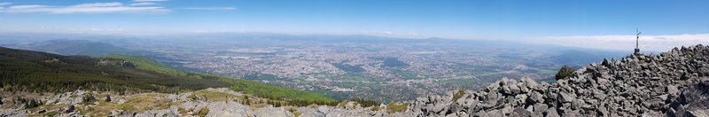
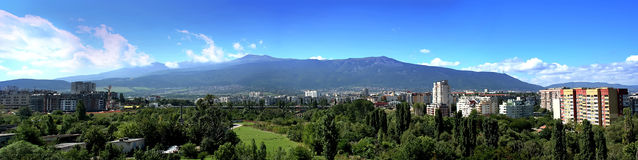
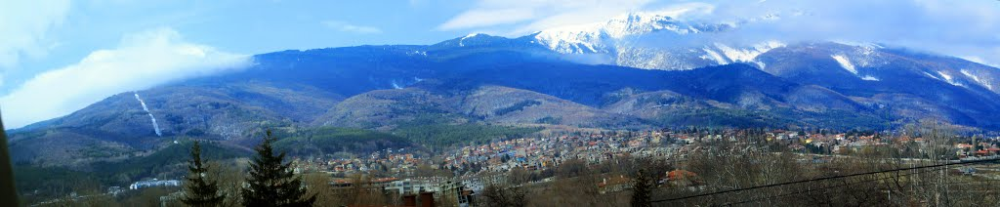

Витоша се намира между Стара планина и Рило-Родопския масив и е част от Средногорието. Тя е единствената куполообразна планина в България и основното и било се откроява добре от останалите планински масиви. То върви по върховете Черни връх, Резньовете, Скопарник и Острица, в посока северозапад-югоизток.
Планината е част от Завалско-Планската планинска редица на Средногорието, като границите ѝ са следните:
на север и североизток – Софийската котловинаФормата на Витоша е почти кръгла с диаметър 20 – 25 km с площ от 278 km2 и средна надморска височина от 1500 m. Най-високата ѝ точка е връх Черни връх (2290 m). По една или друга причина тази височина е станала популярна в географската литература и географските карти на България, като истинската кота на триангулачната точка на върха по всички едро- и дребномащабни топографски карти е 2280,5 m.
<
Витоша е изградена от мощен монцонитов (сиенитов) плутон в ядрото на планината, вместен сред горнокредни вулканити – андезити, андезитови брекчи, туфи, туфити, върху които на места по северната периферия лежат терциерни конгломерати и пясъчници. В северното ѝ подножие са отложени плиоценски езерни утайки, припокрити от алувиално-пролувиални наслаги с кватернерна възраст. Самата планина се образува през неогена и кватернера в резултат на тектонско издигане по по-горе цитираните разломи и разседи, разположени по периферията ѝ. По някои от тези все още активни разседи бликат минерални извори – Панчарево, Железница, Рударци и Княжево. Карстовите извори има в южната ѝ част, като най-известен е Живата вода в местността „Врелото“, над Боснек.
Формата на планината е куполовидна и за нея не са характерни дълбоки релефни образувания като долини и пр. Това се дължи на факта, че Витоша е сравнително млада планина. За по-лесно описание планината се разделя на четири основни части, като линиите на деление и на четирите започват от Черни връх и свършват в подножието на планината.
През кватернера билните части на планината попадат в пояса на периглациалния климат и тогава се образуват характерните за нея каменните реки (често неправилно наричани морени поради визуалното си сходство с тях), снежници, каменни сипеи и свлачища. Каменните реки представляват големи струпвания на заоблени скални блокове, получили са се вследствие на течащата вода и изветряването, които постепенно са загладили техните ръбове. Те представляват основна туристическа дестинация в планината.
Интересен не само за туристите, но и за науката е Боснешкият карстов район. Това е най-голямата територия с карстови форми във Витоша. Площта му е около 30 km2 и почти целият е включен в парк Витоша.
Климатът на Витоша е типично планински с голяма валежна сума 1250 mm. В най-ниските ѝ части годишното количество на валежите достига 700 mm, а в по-високите тази стойност надминава 1000 mm. На Черни връх валежите са 1050 mm. Твърдите валежи от сняг и град представляват над 50% от общото количество на годишните валежи. Средната януарска температура за планината е -4 °С, а на Черни връх е -8 °С. Летните температури също не са особено високи. Средната юлска температура е 13 °С, а на Черни връх 8 °С. Абсолютната максимална температура на Черни връх е +24 °С, а абсолютната минимална е -27,4 °С. Основни за планината са югозападните ветрове. Често ветровете в по-високите части достигат голяма скорост и вследствие тяхното действия остават обширни ветровали. По билото на Витоша средната годишна скорост на вятъра е над 10 m/s. Общото време на слънчевото греене е сравнително малко, като за средните части на планината то е 2400 h, а за Черни връх то е по-малко от 2000 h.
Във Витоша има голям брой малки водни източници, но единствената голяма река, която извира от планината, е река Струма, която тече на юг, преминава през България и Гърция и се влива в Бяло/Егейско море. Другите, по-малки реки, образуващи сравнително дълбоки долини са Палакария, Железнишка, Бистрица, Драгалевска, Боянска, Владайска, Матница и др. Всички те, с изключение на Матница, принадлежат към басейна на река Искър. На територията на Витоша има и 6 подземни реки, в галериите на пещера Духлата, край село Боснек.
Голямото разнообразие на географски условия и големите разлики в надморската височина на различни части от Витоша са предпоставка за голямо почвено разнообразие. Почвообразуването протича основно над продуктите от изветрянето на скали с киселинен характер. В образуването на почвите участва и специфичната витошка флора. Най-големи участъци обхващат кафявите горски, планинско-ливадните, торфените и торфенисто-блатни почви. Срещат се също и канелени горски почви, които са често излужени.
